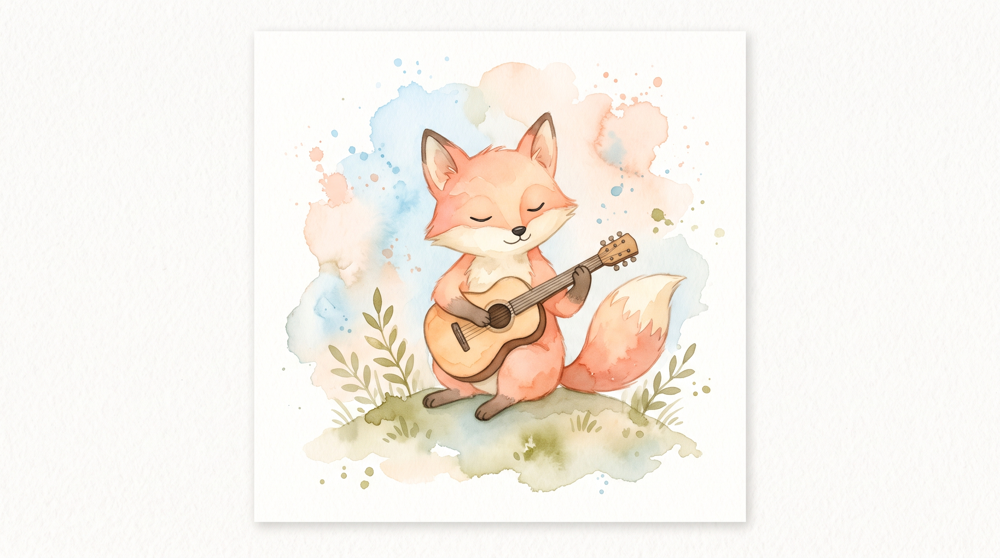
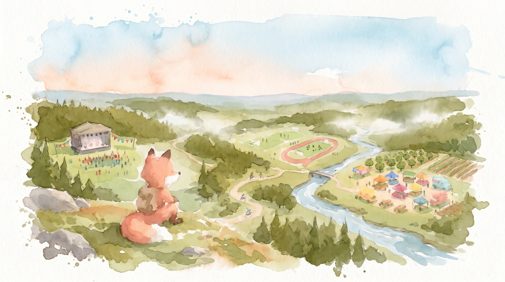
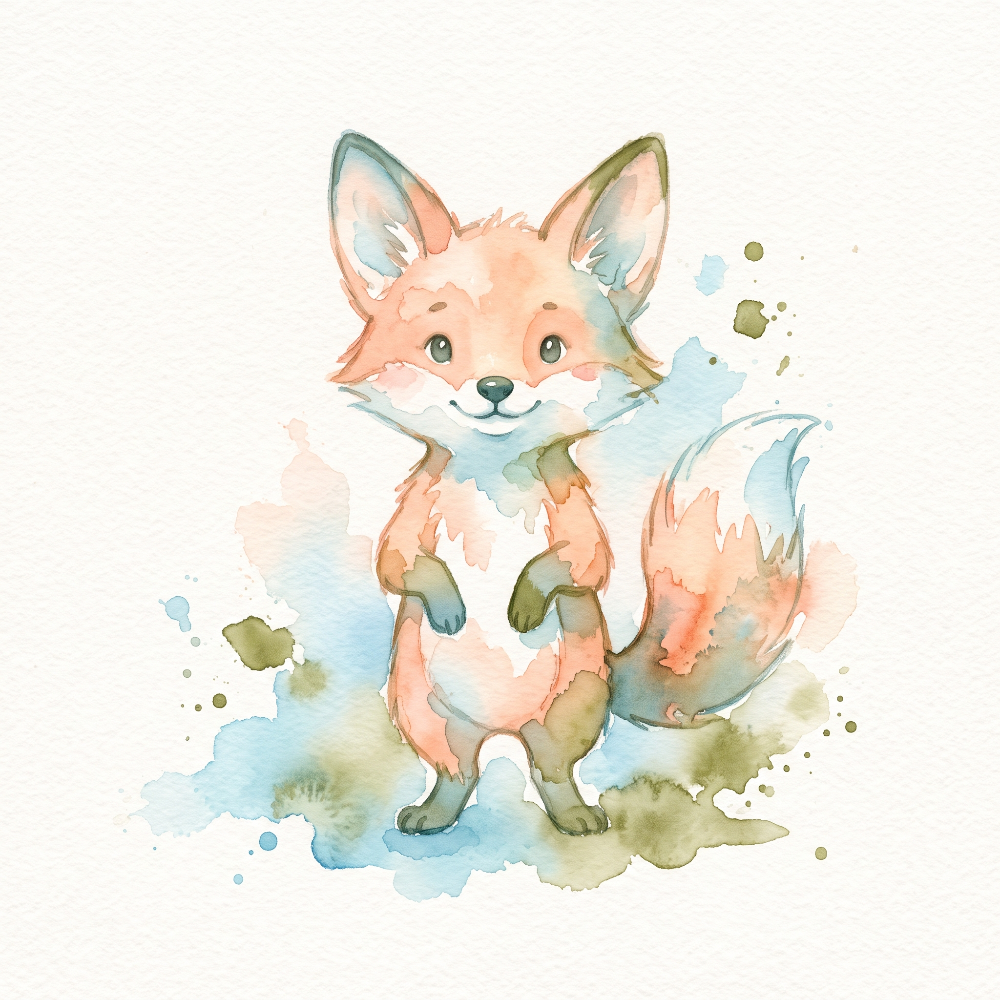
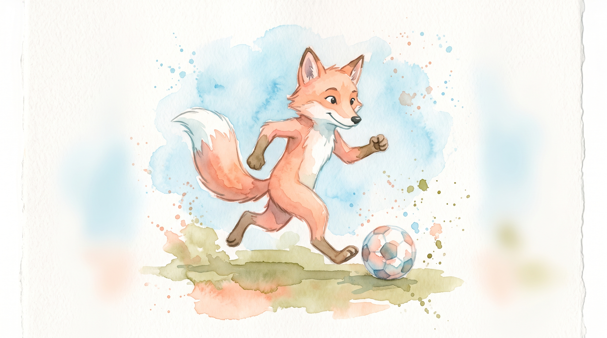
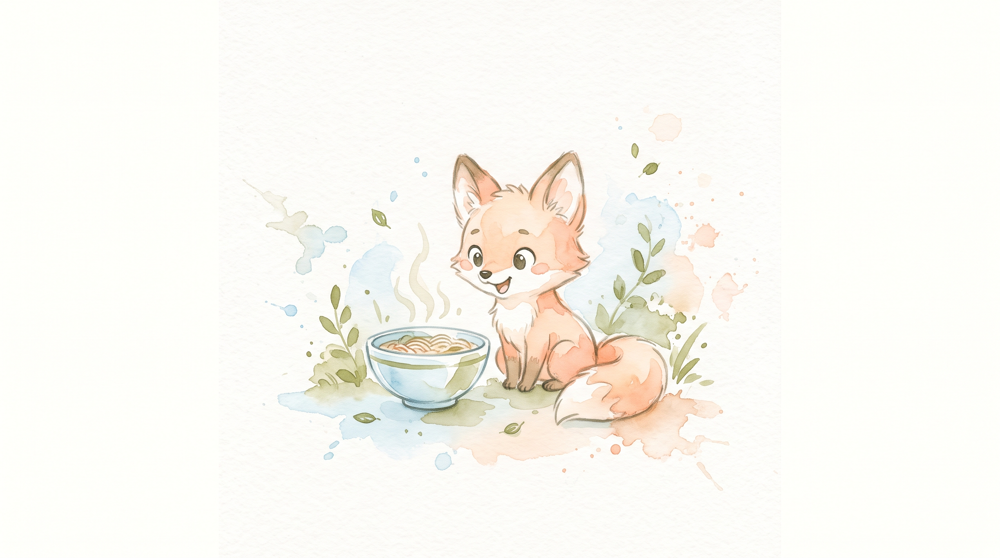

MÜZİK
Yolculukların ritmini akustik ezgiler ve gitar tınılarıyla yakalamak.

Dünyayı adım adım gezen, yeni rotalar ve hikâyeler biriktiren bir gezginim.

Uzmanlık alanım gezi olup yeni coğrafyaları, kültürleri ve patikaları keşfetmeyi büyük bir tutkuyla sürdürüyorum.
Gezilerimde biriktirdiğim hikâyeler ve deneyimler, hayata ve dünyaya çok daha geniş bir pencereden bakmamı sağlıyor.
Bu kişisel sayfada yolculuklarımı, müzik, spor ve lezzet duraklarımı sizlerle paylaşmaktan mutluluk duyuyorum.

Yolculukların ritmini akustik ezgiler ve gitar tınılarıyla yakalamak.

Doğada hareket etmek, koşmak ve aktif kalarak enerjiyi yüksek tutmak.

Gezilen coğrafyaların yerel lezzetlerini keşfetmek ve yeni tatlar denemek.
Bana e-posta yoluyla ulaşabilirsiniz: